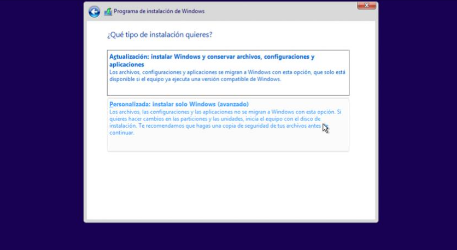

Instalación, configuración y administración de Windows
¿Cuáles los requisitos mínimos para poder instalar Windows 10?
Los requisitos mínimos para poder instalar y ejecutar sin problemas Windows 10 son los mismos que Windows 7:
- Procesador 1 Ghz.
- 2 GB de memoria RAM.
- 16 GB de espacio en el disco duro para Windows 10 de 32 bits y 20 GB de espacio para la versión de 64 bits.
- Tarjeta gráfica compatible con DirectX 9.0.
- Pantalla con resolución mínima de 800×600.
¿Instalación de Windows, qué necesitamos?
Lo primero que vamos a necesitar para instalar Windows en nuestra PC o laptop (notebook, ultrabook etcétera) es el instalador o sea el medio o dispositivo físico ya sea DVD o USB (pendrive o disco externo), que utilizaremos en nuestra instalación el cual contiene los archivos que posteriormente se copiaran al disco duro donde quedará instalado Windows.
Para crear el instalador DVD/USB de Windows 10, necesitaremos primero descargar alguna imagen ISO de Windows, según la versión y arquitectura
de Windows soportada por nuestro ordenador.
En el caso de Windows 10, que es el Sistema Operativo que recomiendo prioritariamente, la propia herramienta gratuita de Microsoft se encargará
de descargar la imagen ISO y acto seguido podremos crear el instalador.
Una vez descargada la imagen ISO de Windows 10, el siguiente paso será grabarla a un DVD o a una memoria USB. Para grabarla a un DVD,
lo único que haremos será introducir el disco vacío en nuestro ordenador y pulsaremos sobre la imagen ISO de Windows 10 con el botón
derecho para elegir la opción de grabar imagen.
Hoy en día es mucho más práctico trabajar con memorias USB, por ello, Microsoft también nos da la opción de descargar y grabar a un
DVD directamente la imagen con la herramienta Media Creation Tool.
Configura la unidad de instalación USB para Windows 10
Para crear la unidad de instalación USB de Windows 10, comienza conectando la llave USB al equipo y asegúrate de que la reconoce.
A continuación, ejecuta la herramienta Media Creation Tool que has descargado desde la página de Microsoft. Tras aceptar las condiciones de uso,
pasarás a configurar los parámetros de creación de la unidad USB de instalación de Windows 10.
Para empezar, selecciona la opción Crear medios de instalación (unidad flash USB, DVD o archivo ISO) para otro PC dado que el
ordenador que estas usando no es el mismo en el que irá instalado Windows 10. Después, haz clic en Siguiente para continuar hacia el siguiente paso.
En este, selecciona el idioma que tendrá Windows 10 y si éste estará instalado en un ordenador con una arquitectura de 32 o 64 bits.
Actualmente la inmensa mayoría de los procesadores son de 64 bits, por lo que esta será la opción más probable.
Sin embargo, si tienes dudas, puedes elegir la opción Ambos para crear una unidad que será compatible con ordenadores de 32 y 64 bits. Haz clic en Siguiente para
continuar hacia el siguiente paso.
Ahora, indica que vas a crear una Unidad flash USB y avanza hacia el próximo paso del asistente pulsando sobre el botón Siguiente,
en el que aparecerá la unidad USB que vas a utilizar. Una vez completado este paso, haz clic en Siguiente y se iniciará el proceso de descarga de todos
los datos necesarios y la creación de la unidad USB de instalación de Windows 10.
Este proceso puede tardar entre 15 y 40 minutos dependiendo de la velocidad de conexión a Internet. Es importante no desconectar la
unidad USB durante todo el proceso y, sobre todo, no apagar el ordenador. Por todo lo demás, puedes seguir usándolo con absoluta normalidad.
Cuando termine de crear la unidad USB, el asistente lo indicará en su ventana. Podrás pulsar el botón Finalizar y ya estará lista
la principal herramienta que necesitas para instalar Windows 10 en un ordenador sin sistema operativo.
Preparar el PC y configurar la BIOS
Una vez que ya tenemos la memoria USB con Windows 10 instalada en nuestro ordenador, el siguiente paso será preparar el ordenador para arrancar desde ella.
Cada placa base y cada modelo de ordenador es un mundo, por lo que no hay una forma universal de hacerlo.
Para entrar la BIOS o UEFI de un ordenador lo que debemos hacer es encenderlo y, durante el arranque, pulsar las teclas F para poder entrar a este menú.
También puede ser que nuestro PC entre a este menú con la tecla SUPR, depende de modelos.
Una vez dentro, debemos buscar el apartado de boot y asegurarnos de que la memoria USB con Windows 10 está configurada como arranque principal.
Ya que estamos en la BIOS y vamos a instalar Windows 10 desde cero, podemos aprovechar y activar el Secure Boot y asegurarnos de que está configurado el PC en modo UEFI.
De esta manera podremos aprovechar al máximo el PC y asegurarnos de que todo nuestro PC se ejecuta de forma segura.
Estas opciones no se pueden (o mejor dicho, no se deben) cambiar una vez Windows está instalado. De ser así, no servirían de nada.
Instala Windows desde cero en tu equipo
Tras las configuraciones iniciales, afrontamos la recta final en la instalación de un sistema operativo Windows 10 desde cero.
Lo primero que te pide el asistente de instalación de Windows 10 es establecer el idioma y el formato de fecha y moneda para Windows. Completa los datos,
haz clic en Siguiente y pulsa sobre el botón Instalar ahora para iniciar la instalación.
El siguiente paso es uno de los más importantes, se trata de introducir la clave de la licencia de Windows 10 que se incluye al
comprar el sistema operativo. Esta clave determinará automáticamente qué versión de Windows 10 Home o Windows 10 Pro se instalará.
Dado que es la primera instalación de Windows 10 que se le hace a tu ordenador, Microsoft no tiene en sus bases de datos una
licencia válida asociada tu ordenador, por lo que si omites este paso no se activará el sistema operativo como sí lo haría un ordenador comprado con Windows 10 ya instalado.
No obstante, si tienes una clave de licencia y surge algún problema con su activación en este paso, Windows te permitirá seguir adelante con la instalación.
En ese caso, deberás activar Windows 10 por teléfono o introduciendo de nuevo la licencia cuando haya terminado el proceso de instalación.

Tras aceptar las condiciones legales de la licencia, procede a instalar Windows 10 en la unidad de almacenamiento del ordenador.
Para ello, selecciona la opción Personalizada: Instalar solo Windows (Avanzado) y elige la unidad en la que irá instalado Windows 10.
Lo más recomendable es que formatees esa unidad. Perderás el sistema operativo FreeDOS que traía instalado de fábrica, pero dejarás espacio libre para Windows.
Haz clic en Formatear para eliminarlo.
Si tienes algo de experiencia en la gestión de discos o quieres cambiar la configuración de las particiones (en caso de haberlas) también
puedes seleccionarlas y pulsar en Eliminar para configurar el espacio disponible a tu gusto.
Una vez distribuido el espacio en la unidad de almacenamiento, selecciona la unidad en la que irá instala Windows 10 y haz clic en Siguiente.
Con esto se inicia el copiado e instalación de los archivos de Windows 10 entre la unidad USB y el almacenamiento interno de tu ordenador.
Este proceso puede durar varios minutos en función del tipo de unidad USB hayas usado y, durante el mismo, el equipo puede reiniciarse varias veces.
Los siguientes pasos consisten en configurar el idioma de Windows 10, las redes y la cuenta de usuario de Windows 10 tal y como tendrías que
hacerlo al comprar un ordenador con Windows 10 preinstalado.
Cuando se complete toda esa configuración, Windows terminará de instalar el sistema operativo aplicando las configuraciones que has indicado y
Windows 10 se iniciará por primera vez.
Desde ese momento, podrás extraer la unidad USB ya que la próxima vez que lo enciendas, tu ordenador arrancará Windows 10 con normalidad directamente
desde la unidad de almacenamiento interno.
Pasos para configurar Windows 10
En este apartado aprenderemos a configurar de manera eficiente tu sistema operativo Windows 10 después de la primera instalación
Ajustes de privacidad
Lo primero que debes hacer es ir a "Configuración" y seleccionar "Privacidad". Dentro de esta sección vas a encontrar una serie de opciones.
Haz clic en "General", luego en la pantalla del lado derecho te vas a mostrar unos elementos que debes activar, los cuales son:
- Permitir que las aplicaciones usen mi id. de publicidad: La plataforma Microsoft te brindará mensajes personales en los aplicativos que tienes instalados.
Desactivar esto no afectara el rendimiento del sistema operativo.
- Activar el filtro Smartscreen: Esta opción debe estar activada. Esto permite llevar un registro de las direcciones de los programas que has comprado.
- Enviar información a Microsoft sobre cómo escribo: Lo que hace esta opción es mejorar las sugerencias de autocompletar. Esta relacionado con brindar
más accesibilidad con el teclado, te aconsejo que las desactive.
- Dejar que los sitios web ofrezcan contenido local relevante: Te recomiendo que la dejes activada, si dominas otro idioma que no sea el idioma americano,
esta función te ayudará bastante. De lo contrario desactívala.
Ajuste de ubicación
Windows vienen con la opción de ubicación, ya que esto le brinda a Microsoft el lugar de origen del usuario. Facilita todo lo referente a zona postal,
dirección de habitación, mapas interactivos. Sin embargo, esta no es necesaria en un dispositivo de escritorio, por lo que no está demás desactivarla.
Para ello simplemente debes entrar en "Configuración > Ubicación" y apagar el interruptor correspondiente.
Puedes desactivar esta opción parcialmente, para que no afecte el programa Cortana. Este software esta relacionado con la seguridad, el mismo procesa
tu voz, para dar acceso a tu dirección de ubicación, notificaciones de calendario, además de recolectar datos de tu dispositivo móvil.
Actualización de Windows 10
Ten presente que este sistema operativo no te da la opción de desactivar las actualizaciones.
- Debes ir a "Configuración > Actualizaciones y seguridad".
- Aquí, escoge "Opciones avanzadas" y selecciona el modo como quieres recibir los update.
- Te recomiendo seleccionar la opción "Equipos en la red local". Así las computadoras conectadas se actualizarán más eficientemente.
Crear una cuenta de administrador o de usuario local en Windows 10
Crea una cuenta local para un menor o para alguien que no tenga una cuenta de Microsoft. Además, si es necesario, puedes conceder privilegios de
administrador a esa cuenta. Una cuenta sin conexión es simplemente otra manera de decir cuenta local.
Al momento de crear una cuenta, recuerda que elegir una contraseña y mantenerla segura son pasos esenciales.
Puesto que no sabemos tu contraseña, si la olvidas o la pierdes, no podremos recuperarla.
Crear una cuenta de usuario local
- Selecciona Inicio > Configuración > Cuentas y, a continuación, selecciona familia & otros usuarios. (En algunas ediciones de Windows verás Otros usuarios).
- Selecciona Agregar a otra persona a este equipo.
- Selecciona No tengo los datos de inicio de sesión de esta persona y, en la página siguiente, selecciona Agregar un usuario sin cuenta Microsoft.
- Escribe un nombre de usuario, una contraseña, un indicio de contraseña o elige preguntas de seguridad, y luego selecciona Siguiente.
Cambiar una cuenta de usuario local a cuenta de administrador
- Seleccione Inicio >Configuración > Cuentas y, a continuación, en Familia & otros usuarios, seleccione el nombre del propietario de la cuenta y, a continuación,
seleccione Cambiar el tipo de cuenta.
- En Tipo de cuenta, seleccione Administrador,y, a continuación, seleccione Aceptar.
- Inicia sesión con la nueva cuenta de administrador.
Carlos Guadalupe Muñoz Cruz NL.29 PROG 5"C"